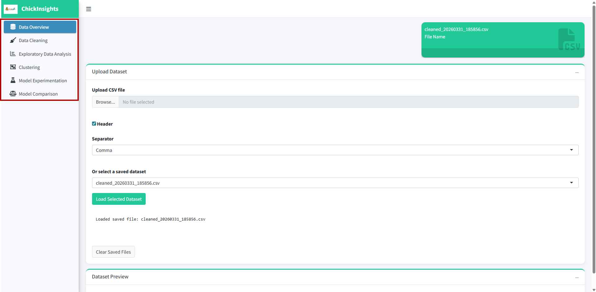
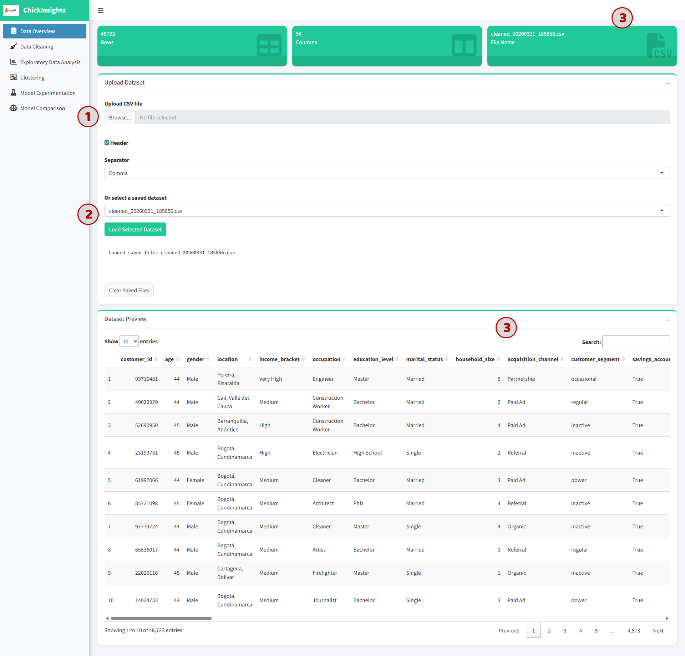
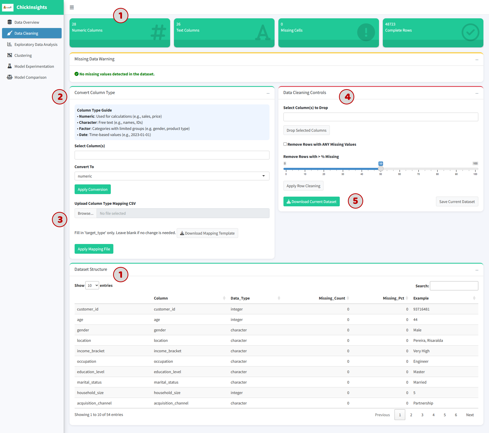
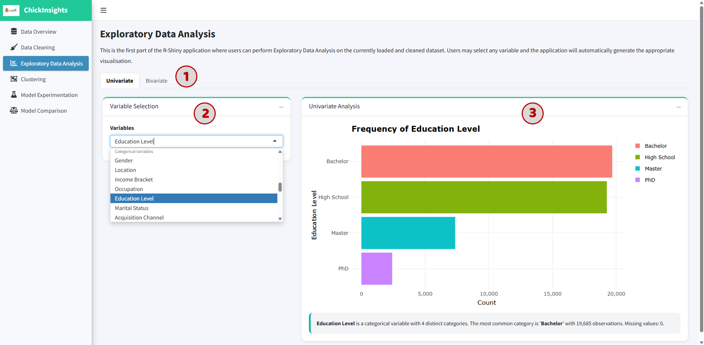
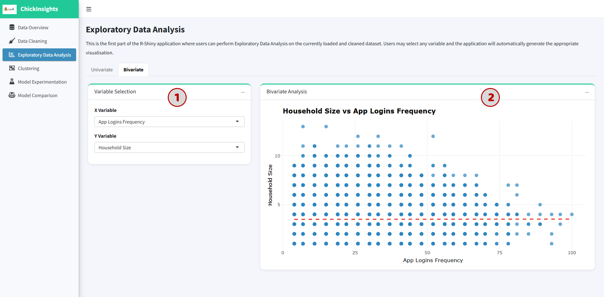
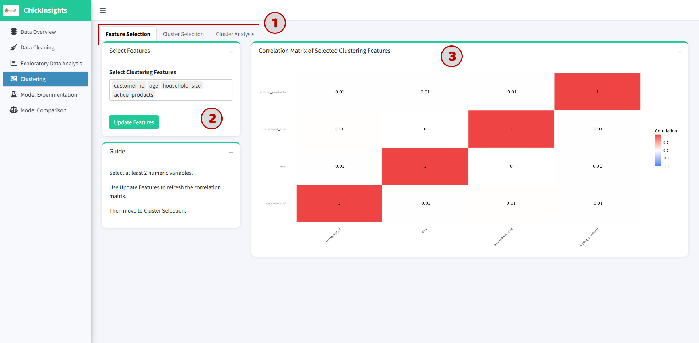
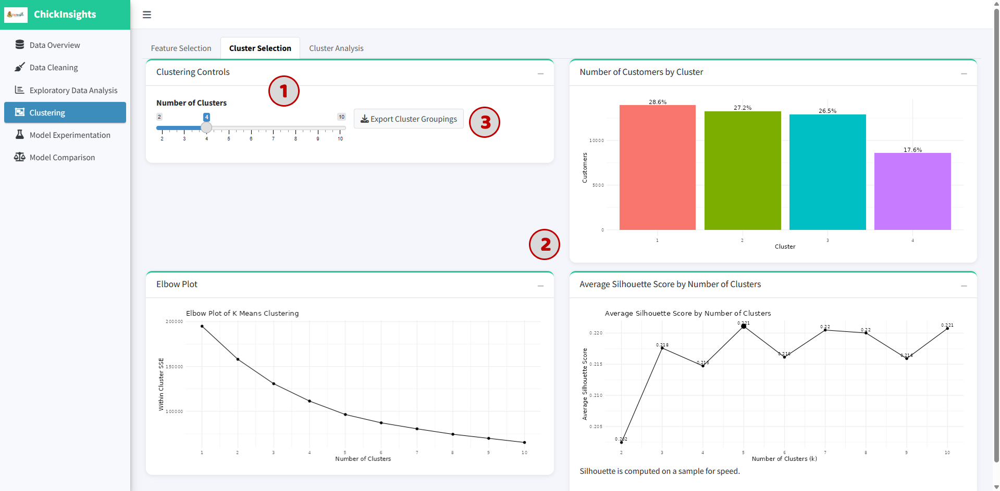
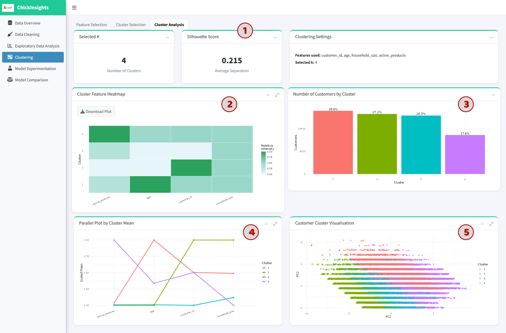
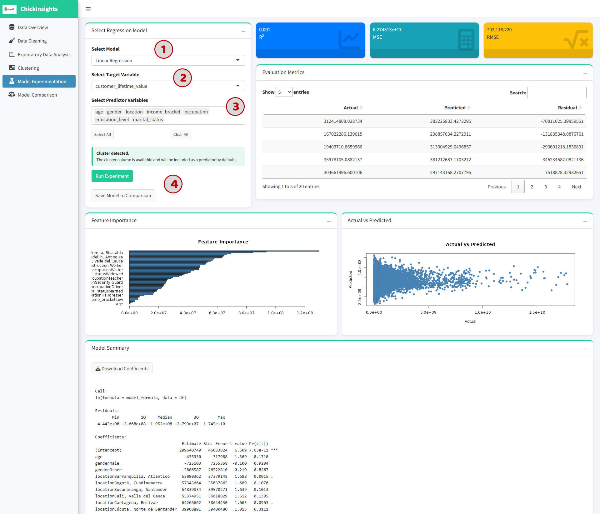
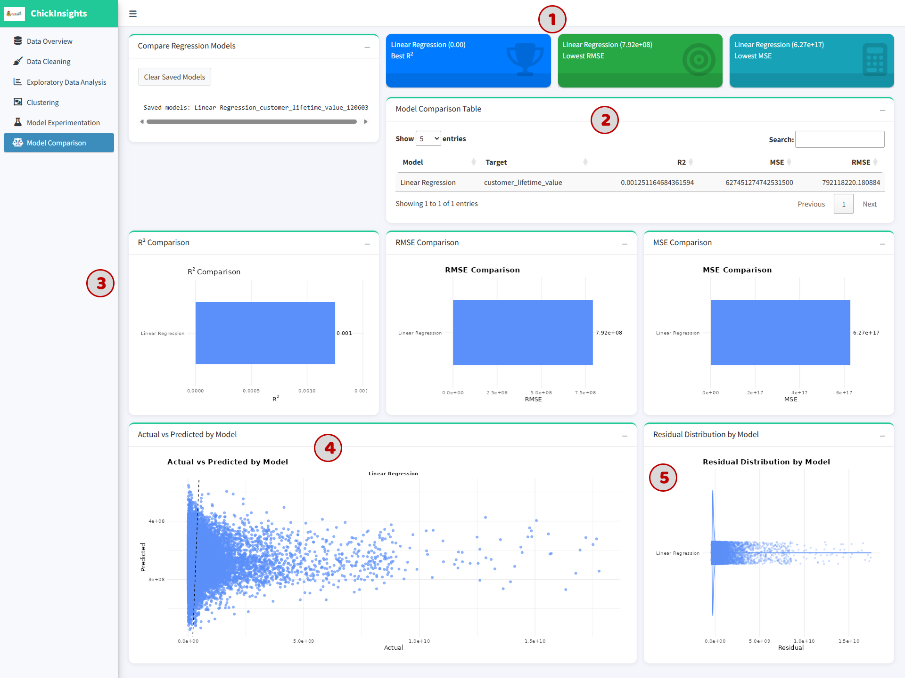

User Guide
Our Shiny app is hosted on shinyapps.io. This comprehensive guide will help you understand how to use the application.
1. Getting Started

On Launch: The landing page defaults to Data Overview.
Navigation: The sidebar contains the following modules:
Data Overview
Data Cleaning
Exploratory Data Analysis
Clustering
Model Experimentation
Model Comparison
2. Data Overview Module
Provides a summary of the dataset and allows users to upload or select datasets.

(1) Upload a dataset:
Click “Browse” under Upload CSV file
Ensure the file has headers and is comma-separated
(2) Alternatively:
Select a preloaded dataset from the dropdown
Click “Load Selected Dataset”
(3) Outputs
Dataset name
Total number of rows and columns
Preview table of the dataset (first 10 rows)
3. Data Cleaning Module
Allows users to preprocess and clean the dataset before analysis.

(1) Dataset Summary Displays:
Number of numeric vs text columns
Missing values
Complete rows
Dataset Structure
(2) Convert Column Types:
Select column(s)
Choose target type:
Numeric
Character
Factor
Date
Click “Apply Conversion”
Useful for variables like age → numeric or income_bracket → factor
(3) Upload Mapping File
Upload a CSV to batch-convert column types
Follow template format provided
(4) Data Cleaning Controls
Drop selected columns
Remove rows with missing values
Remove rows based on missing % threshold
(5) Save & Export Cleaned Data: Click “Save Current Dataset” to save changes or “Download Current Dataset” to download the new data.
4. Exploratory Data Analysis (EDA) Module
(1) User can select between Univariate and Bivariate tab
4.1 Univariate Analysis:
Analyze distribution of a single variable in isolation.

(2) Select a variable from dropdown box
(3) The system auto-generates plot base on the data type (such as bar chart for categorical or histogram for numeric)
Chart visualization
Text summary (e.g., most frequent category)
4.2 Bivariate Analysis
Explore relationships between two variables.

Select X and Y variable
The system generates plot base on the data types (such as scatter plot for numeric vs numeric; boxplot or grouped plots for categorical combinations)
Look for trends (positive/negative relationships)
Identify clusters or outliers
5. Clustering Module
Enables users to segment customers into meaningful groups based on behavioral and demographic characteristics; supports identifying patterns such as high-value customers, low-engagement users, and distinct usage profiles.

(1) The module is structured into three main steps:
Feature Selection
Cluster Selection
Cluster Analysis
5.1 Feature Selection
To select relevant numeric variables that will be used for clustering:
(2) Select at least 2 numeric variables from the dropdown and click “Update Features”
(3) Output: A Correlation Matrix Heatmap is generated to show relationships between selected features
Values close to +1 or -1 → strong correlation
Values near 0 → weak/no relationship
Avoid selecting highly correlated variables (to reduce redundancy)
Focus on behavior-related variables for better clustering results
5.2 Cluster Selection
To determine the optimal number of clusters (K).

(1) Use the slider to select number of clusters (K = 2 to 10)
(2) Observe the following visual aids:
Elbow Plot: Shows Within-Cluster Sum of Squares (WCSS). Look for the “elbow point” where improvement slows down -> indicates a good number of clusters
Silhouette Score Plot: measures how well data points fit within their cluster, range from -1 to +1. Closer to 1 → better clustering; around 0.2–0.5 → moderate separation.
Cluster Distribution Chart: Displays number (and %) of customers in each cluster
Choose K where:
Elbow stabilizes
Silhouette score is relatively high
Clusters are reasonably balanced
(3) Click “Export Cluster Groupings” to download results
5.3 Cluster Analysis
To interpret and understand the characteristics of each cluster.

(1) Summary Metrics
Selected number of clusters (K)
Average silhouette score
Cluster settings (feature used, selected k)
(2) Cluster Feature Heatmap: Shows relative values of features per cluster. Darker color → higher relative value
(3) Cluster Size Distribution: Bar chart showing proportion of customers in each cluster
(4) Parallel Coordinate Plot: Displays cluster means across all selected features, each line = one cluster. Helps compare patterns across variables
(5) Customer Cluster Visualization (PCA Plot): 2D projection of customers using PCA
Each dot = one customer
Colors = cluster membership
Separation indicates clustering quality
6. Prediction Modelling Module - Model Experimentation & Comparison
6.1 Model Experimentation
Allows users to build predictive models to estimate key business outcomes (such as CLV). Users can select different variables and evaluate model performance through multiple metrics and visual diagnostics.

(1) Select Model Type: Choose a regression model (e.g., Linear Regression, randomForest, XGBoost) from the dropdown
(2) Select Target Variable to predict
(3) Select Predictor Variables: select relevant input features such as Demographics (age, gender), Socioeconomic (income_bracket, occupation), Behavioral: (app_logins_frequency, active_products)
(*) If clustering has been performed: Cluster labels are automatically included as predictors.
(4) Click “Run Experiment”. (* Optional) Click “Save Model to Comparison” for later evaluation.
Performance Metrics: Displayed at the top:
R² (Coefficient of Determination): measures how well the model explains variance, range from 0 to 1. Higher = better fit.
MSE (Mean Squared Error): measures average squared prediction error (lower = better)
RMSE (Root Mean Squared Error): same as MSE but in original scale
Evaluation Table: actual values, predicted values, residuals (errors). This table is meant to identify large prediction errors or detect model instability.
Feature Importance Plot: shows relative importance of predictors. Longer bars = stronger influence on prediction
Actual vs Predicted Plot: Scatter plot comparing (X-axis: Actual values) and (Y-axis: Predicted values). Ideal model → points along diagonal line.
Model Summary: regression coefficients, p-values, residual distribution.
Avoid including irrelevant variables
Use domain knowledge for feature selection
Check multicollinearity before modeling
Compare multiple models before concluding
6.2 Model Comparison Module
Allows users to evaluate and compare multiple saved models to determine the best-performing one.
Ensure at least one model is saved.

(1) The top cards display “Best Model Highlights” (best R², lowest RMSE, lowest MSE), helps quickly identify the best-performing model.
(2) Model Comparison Table consists of Model name, Target variables, R², MSE, RMSE.
(3) Metric Comparison Charts includes R², RMSE, MSE comparison.
(4) Actual vs Predicted Plot: shows prediction performance across models, helps visually assess model accuracy or spread of predictions.
(5) Residual Distribution Plot shows error distribution: Centered around 0 → good model; Wide spread → poor accuracy; Skewed → biased predictions.
Choose the best model based on:
Highest R²
Lowest RMSE
Balanced residual distribution
Consistent prediction patterns